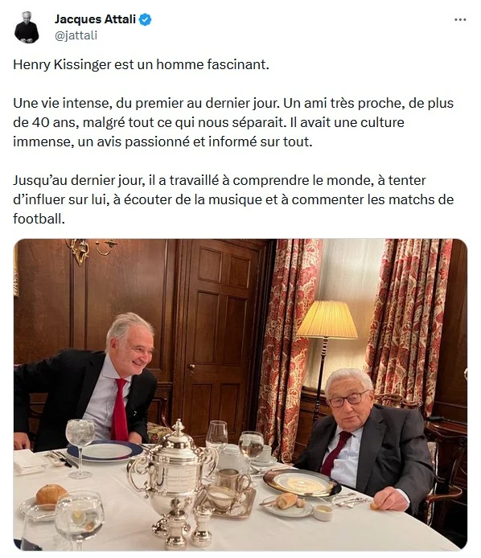

Publication d’archives
Les mots de Jacques Attali après la mort de Kissinger publiés sur X (ex-twitter). Voir capture ci-dessous…
Date indiquée par Facebook · 3 décembre 2023
Texte conservé avec la publication
Les mots de Jacques Attali après la mort de Kissinger publiés sur X (ex-twitter). Voir capture ci-dessous. Comment peut-on tenir de tels propos élogieux sur cette personnalité américaine qui a organisé le chaos et répandu la mort sur la planète.
Oubliée la responsabilité de Kissinger dans la prolongation de la guerre du Vietnam et son extension au Cambodge et au Laos, oubliés le coup d’État au Chili, son soutien à Pinochet, la création du plan Condor, réseau de chasse aux opposants dans six dictatures militaires d’Amérique latine, oubliées les campagnes d’assassinats et de subversion de la démocratie à Chypre, en Grèce et au Bangladesh ...
C'est la mémoire de ses victimes qu'il faut honorer et non pas ses manigances criminelles quand il était en responsabilité. Un géant du crime et l'ignominie.

Sources
Archive rouge · export Facebook · AR-0002-FB-01529
À lire aussi · 6 novembre 2024 : le PCF répond à l’élection de Trump